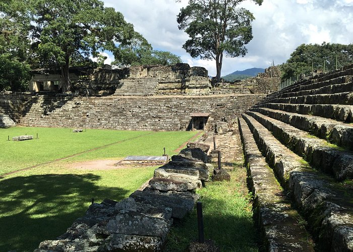
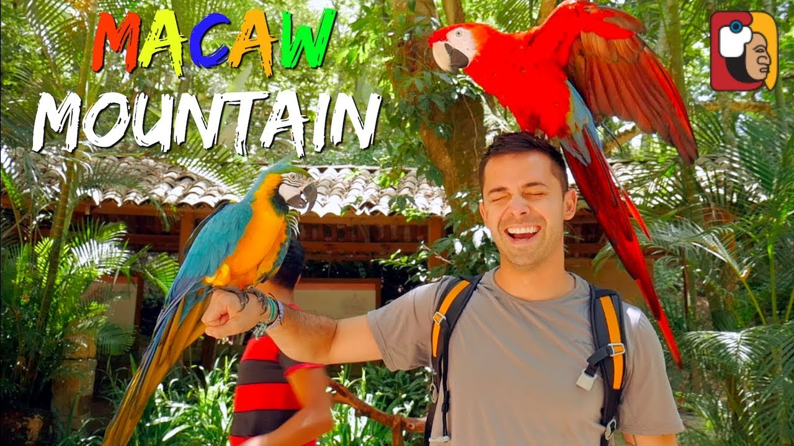
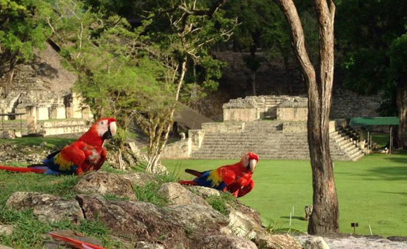

Let's Travel
Ruinas de copan
Las impresionantes ruinas Mayas de Copán, abandonadas en el siglo X, merecen todo el tiempo de visita que les puedas dedicar. Un día completo como mínimo. Es recomendable contratar un guía para aprender mucho más sobre este Patrimonio de la Humanidad, su historia y su gente. Después de tu aventura, disfruta de una taza del fuerte café hondureño mientras observas a la gente en la plaza principal o, simplemente, disfruta del hermoso paisaje de montaña.
Macaw Mountain es considerado como uno de los parques de aves más importantes del país, ubicado en Copán Ruinas. Además, de ser uno de los centros turísticos de Copán, es también una reserva natural para diversas especies de aves que están en peligro de extinción. Este lugar se encuentra completamente rodeado de naturaleza, y se destaca por la diversidad de especies que habitan. Uno de los sitios que no pueden dejar de visitar si van a Copán es el parque de aves Macaw Mountain, un sitio sumamente interesante que tiene más de 180 aves nativas de todo Honduras y Centroamérica, así como algunas especies de América del Sur.
Descubierta en 1570 por Diego García de Palacio, Copán es uno de los sitios más importantes remanentes de la civilización Maya. Los vestigios de la ciudad y las imponentes plazas públicas revelan los tres principales períodos de su desarrollo, antes de que la ciudad fuera abandonada a principios del siglo IX d.C. La Plaza de la Escalinata Jeroglífica posee una escalera monumental, una de las estructuras excepcionales de la cultura Maya.